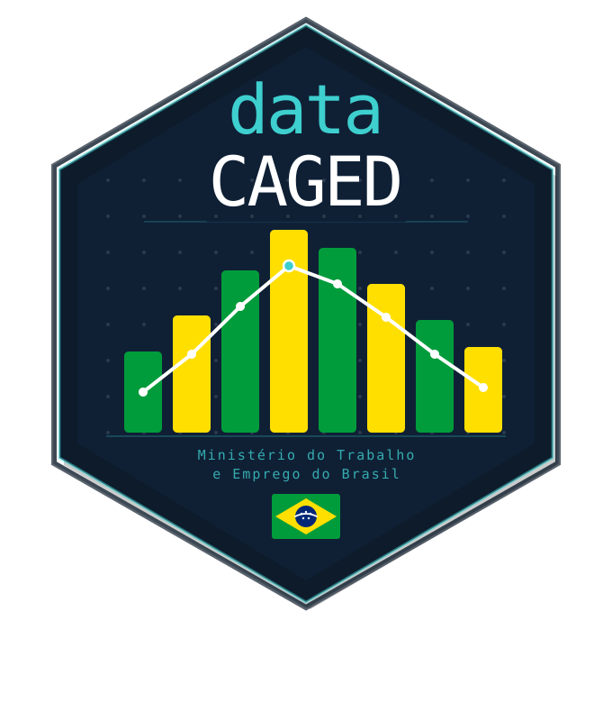

Conheça o dataCAGED: microdados do CAGED direto no DuckDB
O GECOMT apresenta o dataCAGED, pacote R disponível no CRAN que reduz a uma única função o trabalho de baixar, ler e organizar os microdados do CAGED.
13 de novembro de 2026

O dataCAGED (pacote R datacaged) automatiza todo o fluxo de trabalho com os microdados do Cadastro Geral de Empregados e Desempregados (CAGED): download, leitura e armazenamento em banco analítico local, pronto para consultas com dplyr ou SQL.
.7z, sem extração para disco temporário;caged_update()) e exportação para Parquet (caged_to_parquet());# Versão estável (CRAN)
install.packages("datacaged")
# Versão de desenvolvimento (GitHub)
pak::pak("gecomt/datacaged")Os arquivos do CAGED antigo (anteriores a 2020) utilizam compressão PPMd e exigem o 7-Zip instalado. O Novo CAGED funciona sem software adicional.
library(datacaged)
library(dplyr)
# Pipeline completo: baixa, lê e grava no DuckDB
caged_load(
years = 2022:2023,
months = seq_len(12L),
db_path = "caged.duckdb"
)
# Conexão e consulta
con <- caged_connect("caged.duckdb")
tbl(con, "caged_mov") |>
filter(uf == 24, competenciamov >= 202201L) |>
group_by(competenciamov) |>
summarise(saldo = sum(saldomovimentacao, na.rm = TRUE)) |>
collect()
DBI::dbDisconnect(con, shutdown = TRUE)| Tabela | Conteúdo | Período |
|---|---|---|
caged_mov |
Movimentações | 2020 em diante |
caged_for |
Declarações fora do prazo | 2020 em diante |
caged_exc |
Exclusões | 2020 em diante |
caged_antigo |
Histórico | 2007 a 2019 |
caged_ajustes |
Ajustes retroativos | 2002 a 2019 |
| Função | Descrição |
|---|---|
caged_load() |
Pipeline completo (download, leitura e gravação no DuckDB) |
caged_adjustments_load() |
Pipeline dos ajustes |
caged_update() |
Baixa apenas as competências novas |
caged_connect() |
Abre a conexão com o banco |
caged_info() |
Estatísticas do banco |
caged_hf_files() |
Lista as competências disponíveis |
caged_to_parquet() |
Exporta tabelas para Parquet |
citation("datacaged")